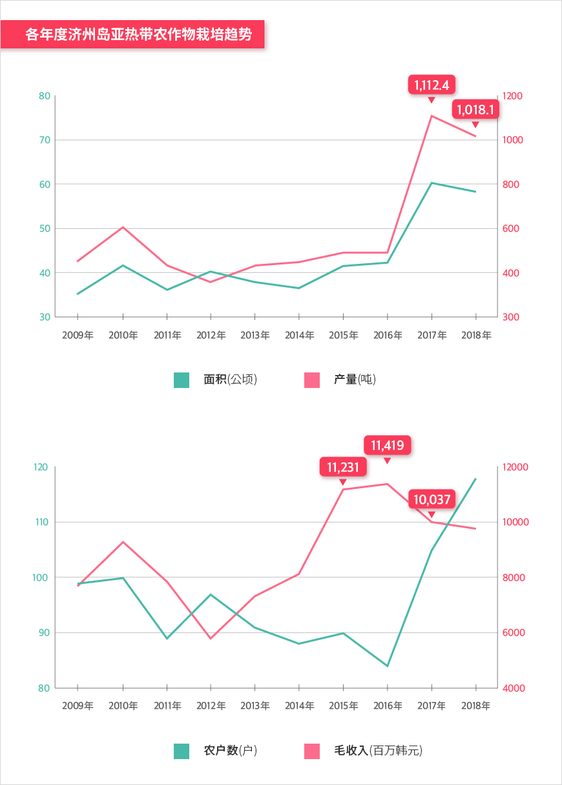

기획취재콘텐츠
- Home
- 제주라이프
- 기획취재콘텐츠
引领未来饮食的济州岛热带及亚热带农作物产业새로운 글


在济州岛的阳光下，熟透的橄榄挂在路边的橄榄树上。两米多高的香蕉树上结满了香蕉，像苹果一样泛着红光的苹果芒和酷似葫芦的木瓜等待着收获。听起来这似乎是属于东南亚或地中海地区的农场风景，但这些橄榄、香蕉、苹果芒和木瓜都是目前济州岛正在积极栽培的亚热带农作物。
- 在济州岛的亚热带水果农场“YUJINFANG”内正种植着木瓜、
香蕉等多种亚热带农作物。ⓒ尹昭真（音） -
香蕉等多种亚热带农作物。ⓒ尹昭真（音） -
因气候变化而变化的农作物产地
据联合国政府间气候变化专门委员会（IPCC）的第五次评估报告显示，过去80年间，济州岛的年平均气温上升了约1.6℃，其幅度在逐渐增大。韩国农村振兴厅预测，在2060年亚热带气候地区将占韩国耕地面积的26.6%，2080年将占62.3%，韩半岛的大部分地区都会变成亚热带气候圈。事实上，济州岛已经被划分到了北亚热带界限。由于气候急剧变暖，预计白菜、萝卜等越冬农作物的种植地将持续北上，其位置会由亚热带农作物代替。作为济州岛代表性农作物的橘子生产地也在从一开始的南部地区逐渐上移，2019年已经北上到了京畿道。目前，济州岛正在扩大芒果、香蕉、木瓜等热带及亚热带代表性农作物的产地。从温带性气候到亚热带气候的变化促使韩国农产品的产地被重新绘制。
韩国亚热带农作物栽培现状 2020年2月
-
亚热带农作物栽培农户数 合计 1,673 户
- 亚热带蔬菜 1,145户
- 亚热带果树 528户
-
亚热带农作物栽培面积 合计 406.6 公顷
- 亚热带蔬菜 164 公顷(ha)
- 亚热带果树 242.6 公顷(ha)
-
亚热带农作物产量 合计 6,343.8 吨
- 亚热带蔬菜 3,466吨
- 亚热带果树 2,878吨

※ 来源 : 农村振兴厅亚热带农作物栽培现状 (2020.02)
截至2020年2月，韩国亚热带农作物的总种植农户达1,673户，种植面积406.6公顷，产量为6,343.8吨。其中，亚热带蔬菜的种植农户达1,145户，种植面积242.6公顷，产量为3,466吨；亚热带果树种植农户达528户，种植面积164公顷，产量为2,878吨。亚热带蔬菜的占地面积依次为苦瓜、姜黄、三菜，果树依次为芒果、百香果、香蕉。在亚热带农作物中，芒果、木瓜、火龙果、橄榄的种植面积在近3年间呈持续上涨的趋势。
截至2020年2月，济州岛共有156家农户在63.6公顷面积上栽种了亚热带果树，其产量超过了总产量的20%，达到了1,296.7吨。对比2019年1月，韩国全域的亚热带农作物种植农户增加1.76%，济州岛从107家增长到156家，增长率达到45%以上，种植面积也从45.2公顷增长到63.6公顷，增长率达到了40%以上。从韩国的热带及亚热带农作物种植农户及面积来看，济州岛的增势尤为明显。

※ 来源 : 农村振兴厅亚热带农作物栽培现状 (2020.02, 2019.01)
济州岛的代表性热带及亚热带农作物
济州岛从2008年开始就以作为热带及亚热带农作物的芒果为主，开始种植火龙果、番石榴、释迦凤梨、牛油果、百香果等果树。此外，还实行了芦笋、西兰花、苤蓝、菜蓟、根甜菜、抱子甘蓝、苦瓜等亚热带蔬菜的适应性研究和栽培技术研发，直到目前，仍在继续栽培部分农作物。在2014年，成功完成了橄榄的露地栽培，开始提供给农户。并且，以之前积累的热带及亚热带农作物栽培技术为基础，构建了济州产苹果芒和香蕉的本土品牌，在市场上获得了优异成绩。
2018年，济州岛的118家农户在58公顷的种植面积中，共产出了1,018吨亚热带农作物，创下了97.88亿韩元的毛收入。对比10年前的2009年，在种植面积和农户数没有增长的情况下，产量和毛收入呈现出明显的增势。在热带及亚热带农作物的栽培实验阶段，扩大了栽培的技术开发及农户的栽培能力，逐渐在产业领域立足。目前，济州岛主要是以香蕉、百香果为主要品种，通过多种少量式生产方式栽培着亚热带果树。虽然没有具体统计，但在济州岛各地也在种植着苦瓜、姜黄、秋葵、三菜、香菜、空心菜等亚热带蔬菜。


2018年，在众多农作物中，苹果芒的栽培面积、产量、毛收入都取得了最高成绩。芒果是热带地区的代表性水果，因果肉软糯、香甜而受到全世界人的喜爱。而济州岛栽培的芒果是果香浓郁、果肉软糯的红色苹果芒。芒果属于熟透即食的水果，收割后的保鲜期很短，只有10天左右。进口芒果都是在未成熟的时期采收，经过高温熏蒸或药物处理后在本地流通，因为如果熟透后再流通就会降低其商品价值，如此一来，与本地直接收获的芒果相比，在味道和香味方面就会存在差异。据济州岛农业技术院研究员高胜灿（音）透露，经品质调查，进口芒果的含糖量低于12白利度，但济州产苹果芒的含糖量高达15白利度，拥有更浓郁的果香和口感。此外，芒果也是高经济效益的农作物，收入会比大棚柑橘高出1.5倍，具有充分的产业竞争力。且芒果的含糖量高，果肉软糯，因此也常用于甜茶、刨冰、酸奶等甜点。济州新罗酒店从2008年至今，每年夏季都会推出济州产苹果芒刨冰作为招牌甜品，虽然价格超过5万韩元，但新鲜的济州产苹果芒带来的精致口感和香味令人垂涎欲滴，因此需求在持续上涨。
- 插图：Relish -
虽然属于亚热带农作物的猕猴桃未包含在济州岛农业技术院的亚热带果树调查中，但在济州岛栽培的亚热带农作物中占据着最大产量。根据2018年的其他果树毛收入现状资料显示，共有521家农户生产了8,300多吨猕猴桃，毛收入约300亿韩元。从济州岛本土品种“猕猴桃”再到相继研发的黄金猕猴桃、红心猕猴桃等，济州岛生产出了各种品种的猕猴桃。在2017年向香港、马来西亚、新加坡、日本等四个国家及地区出口了80吨，2018年则出口160吨，对比上一年，足足增长到2倍，成为了“孝子”出口产品。2004年，济州岛西归浦市与由新西兰猕猴桃生产农户共同推出的高级猕猴桃品牌“佳沛”签订了生产协议，自2007年1月首次流通济州岛黄金猕猴桃后双方一直保持着互助合作。在2015年，韩国农村振兴厅研发出了韩国本土的猕猴桃品种“Jecy Gold”与“汉拿黄金”等，并向种植农户供应，摆脱了过去因使用国外种子而支付专利费的方式，同时致力于提高农户生产效率。
香蕉是济州岛从20世纪80年代开始栽培，但因进口自由化导致竞争力下降而被淘汰，之后种植农户在2016年再次增加的农作物。香蕉农户数从2016年的3家、2017年的17家，再到2018年的28家，呈递增的趋势。毛收入也从2016年的1.71亿韩元增加到了2018年的23.45亿韩元，增长到了13倍以上。韩国产香蕉的价格虽然高于进口香蕉，但受到喜爱可信赖的本地产食品的消费者欢迎，正成为有潜力的农作物。
- 插图：Relish -
被称为“苦黄瓜”的藤蔓类蔬菜“苦瓜”含有丰富的维生素C和矿物质，有助于预防糖尿病、肥胖及改善高血压等，作为健康功能性农作物深受欢迎。在韩国，苦瓜的总种植面积为107.92公顷，是种植面积最大的亚热带农作物。苦瓜可用于健康功能性食品及亚洲食品，使用范围很广，因此有望成为与第六产业相联的高效益农作物。
济州岛是实现亚热带农作物产业化的最佳地区
位于韩国最南端的济州岛正迅速应对气候变化的危机，引领着亚热带农作物品种的研发、生产及大众化。济州岛具备了成为亚热带农作物产区的最佳条件，位于韩国最南端，平均气温较高，因此，种植亚热带农作物时，加温栽培费用会低于其他地区，部分农作物还可以无加温式栽培。此外，具有天然的自然环境带来的品牌价值，以及将多种生物物种作为基础，成为化妆品原料及功能性食品产业等生物产业圣地的产业背景，益于亚热带农作物的产业化。
位于济州岛吾罗洞的农村振兴厅温室效应应对农业研究所是国立园艺特作科学院所属机构，以2008年的温室效应应对农业研究中心开始，在2015年整改为温室效应应对农业研究所，与济州特别自治道农业技术院一起应对气候变化，为确保农作物的竞争力一直致力于热带及亚热带农作物的品种、栽培技术研究、证明及普及等。
农村振兴厅为了开发未来食品，以2008年的亚热带农作物研究为起点，共引进了50种亚热带农作物。在2017年集中选育了秋葵、三菜、苦瓜、姜黄等12种亚热带蔬菜和芒果、百香果、木瓜等8种亚热带果树。在此基础中，为了增加农户的生产能力，还研发出了亚热带农作物的栽培技术，并提供给了农户。针对含有降低血糖成分的苦瓜发明出了无加温式设施栽培技术，将产量增加了24%；针对豇豆证实了其露地栽培的定植期，增加了33%的栽培量；针对作为亚热带蔬菜的菜蓟发明出了可以甄选符合韩国环境的品种并栽培的技术，将产量增加了27%；针对百香果则发明出了树苗繁殖技术，将树苗的每10公顷价格降到了240万韩元。
此外，在研发热带及亚热带农作物栽培技术的同时，也在致力于农业基础的建设。为应对FTA等农产品市场的开放与扩大，强化旱地作物的竞争力，济州岛从2013年到2019年共投资161亿韩元，推进并集中培育着“精耕效益农作物园区建设事业”。2020年又投资38.33亿韩元（道出资23亿韩元、个体出资15.33亿韩元）用来建设新的精耕效益农作物园区。扶持品种有热带及亚热带蔬菜、花卉、经济作物等旱地作物和亚热带果树等。由于必须要大棚栽培，因此正积极推进初期投资费用较高的热带及亚热带农作物的栽培，落实效益农作物，努力构建提高农户收入的结构。
亚热带农作物产业能否实现第六产业化？
第六产业化是确保作为第一产业的农业竞争力的必要条件。目前正集中于在韩国种植年份不长的热带及亚热带农作物的品种改良与收益性放大等，从而稳定第一产业的同时，探求实现第六产业化的可能性。
位于济州市翰京面乐泉里的九巫术村试着在露地栽植了橄榄树，所幸土壤和气候相宜，并没有导致失败。在济州岛露地栽培的橄榄会用于九巫术村运营的披萨制作体验。计划通过体验活动来充分确认对于济州岛橄榄的大众需求，从而研发并流通橄榄油。此外，济州岛的咖啡种植农户除了生产咖啡外，还会生产咖啡酒等，都在致力于提高附加价值。
济州岛农业技术院的农产品加工创业培训运营着采用农作物来制作并销售果酱、醋、红酒等加工食品的多种指导项目。其中，种植香蕉和木瓜等多种热带及亚热带农作物的代表性农家“YUJINFANG”也接受了该培训项目，目前正制作并销售以香蕉和菠萝等热带果树作为原料的食品，且提供着体验项目。
今后的课题是促进消费与品牌成立
济州农业技术院研究员高胜灿（音）强调了品牌的重要性，表示“为了增加韩国产亚热带农作物的收入，需要有别于进口农作物，实行品牌及产业高级化战略。”猕猴桃、芒果、香蕉就是以产业高级化战略为基础，成功提高济州产品牌知名度的代表性热带及亚热带农作物。济州产香蕉的价格虽然比进口香蕉高出2倍左右，但通过环保栽培方式，树立了“健康水果”这一品牌形象，因此保持着稳定的销量。济州产苹果芒的价格也高出外国产芒果，但因为含糖量高、品质好，树立了优质水果的品牌形象，正以百货商店为中心持续提高着销量。
农村振兴厅温室效应应对农业研究所研究员金成哲（音）表示，为促进亚热带果树和亚热带蔬菜的销售，有必要利用亚热带蔬菜及果树来实现食品大众化。
同时他还表示，水果可以直接食用，但亚热带蔬菜却需要二次加工。亚热带蔬菜对于韩国人来讲多少有些陌生。为了使国民能够熟悉这些亚热带蔬菜的味道，正在研发与白菜、洋葱、辣椒等韩国传统旱地作物相混合的韩式亚热带蔬菜新概念料理。
- 农村振兴厅温室效应应对农业研究所研究员金成哲
- (左)车耀太叶汤 ⓒ农村振兴厅温室效应应对农业研究所,
(右)炸印第安菠菜玉米 ⓒ农村振兴厅温室效应应对农业研究所 -
(右)炸印第安菠菜玉米 ⓒ农村振兴厅温室效应应对农业研究所 -
2016年，为宣传韩国栽培的热带及亚热带农作物并促进消费，韩国农业研究所举办了“亚热带蔬菜料理韩餐预演会”。在预演会上，由京畿道大学餐饮烹饪专业金明熙（音）教授团队和专业厨师组介绍了使用正在济州岛栽培的苦瓜、空心菜等15种亚热带蔬菜研发的泡菜（辛奇，萝卜块泡菜）、炒菜、沙拉、甜点等24种料理。结束预演会后，还赠送了可以在家培育的“印第安菠菜”秧苗以及“亚热带农作物料理食谱”。
随着跨国婚姻家庭的增加，以及熟悉东南亚饮食的年轻人增多，亚热带农作物的需求正逐渐上涨。比如香菜，一开始因为味道特殊，所以只有少数人喜欢，但现在反而成为了深受欢迎的蔬菜，甚至有人选择在家栽培。不仅是首尔，在济州岛提供热带及亚热带农作物料理的东南亚餐厅也在不断增加。预计，随着栽培技术与品牌化的稳定，济州产热带及亚热带农作物的人气将进一步上升。”
- 农村振兴厅温室效应应对农业研究所
今年3月，济州特别自治道农业技术院表示，将在2020年到2021年的两年间，按照各用途选出可进行露地栽培的橄榄品种，并探讨作为新收入来源的可能性。并表示正在提前寻找可以在济州岛栽培龙眼、星苹果等亚热带果树的地区，而对于已完成栽培可行性研究的荔枝等农作物，将在今年发行栽培技术手册，提供给农户。不仅如此，位于济州市吾罗洞的温室效应应对农业研究所正在栽培温室内试验咖啡、橄榄、芒果、姜黄、热带菠菜等多种热带及亚热带农作物的栽培环境，从而研究出适合济州岛环境的品种。
不久的将来，相信韩国人的饭桌上就会出现加入济州产橄榄的披萨、使用济州产青木瓜制作的沙拉和炒空心菜等料理。济州岛正在通过为了应对气候变化的研究并筛选热带及亚热带的农作物品种、提高农业技术、与济州岛纯净农产品品牌的共赢合作，以热带及亚热带农作物绘制新的特产地图。
이전글
다음글